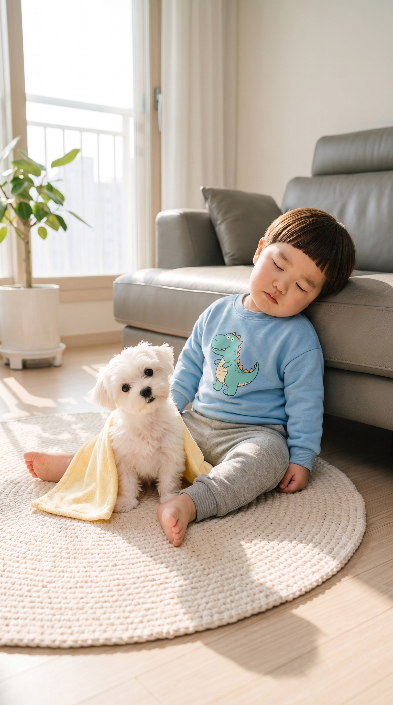

도윤이 낮잠 편 · 2차 실험
🔴 사진은 꼭 이 페이지의 사진으로 — 폰에 예전 사진이 남아 있으면 헷갈립니다. 실험마다 바로 위 사진을 저장해 시작 프레임으로 넣어 주세요.
1차에서 대사만 바꾼 1A·1B·1C 가 전부 실패했고, 3A 는 사진이 달랐습니다. 그래서 이번엔 사진만 바꿔 보고(E1·E2), 같은 걸 다시 넣어 봅니다(E3·E4).
통과하면 크레딧이 듭니다 — E2 는 영상이 어색해도 판정용입니다.
1차에서 대사만 바꾼 1A·1B·1C 가 전부 실패했고, 3A 는 사진이 달랐습니다. 그래서 이번엔 사진만 바꿔 보고(E1·E2), 같은 걸 다시 넣어 봅니다(E3·E4).
통과하면 크레딧이 듭니다 — E2 는 영상이 어색해도 판정용입니다.
E1
사진이 원인인가? (3컷)
지난번 3A 는 예전 사진으로 돌아가서 통과했습니다. 이번엔 글자는 3A 그대로, 사진만 지금 3컷 사진으로 바꿉니다.
📷 시작 사진: 3컷 사진 (소파에 기대 조는 사진)

📲 길게 눌러 «사진 앱에 저장» · 원본 열기
{kind=link}
E1 프롬프트 (= 1차 3A 와 글자 동일) · 길이 10초
Prompt: 9:16 vertical video continuing from previous scene in Korea. Maintain exact appearance from start frame: cute 24-month-old Korean toddler boy Doyoon in a sky-blue dinosaur-print sweatshirt and grey jogger pants and his small fluffy white Maltese puppy friend Kongi on a round cream knitted rug in a bright sunny Korean apartment living room in the afternoon. Static camera, eye-level medium shot. Doyoon sits on the rug leaning against the grey sofa and dozes off, his head nodding slowly, and mumbles sleepily, while Kongi sits beside him wide awake and tilts its head curiously. Dialogue: "음냐, 콩이 착하다. 형아도 쪼끔만 쉴게." Audio: Solo 24-month-old Korean toddler boy voice mumbling softly in clear Korean, quiet indoor room tone.
E2
사진이 원인인가? (1컷)
1A 글자는 1컷 사진으로 실패했습니다. 글자는 1A 그대로, 사진만 통과했던 2컷 사진으로 바꿉니다. 영상은 어색해도 됩니다 — 통과/실패만 봅니다.
📷 시작 사진: ⚠️ 2컷 사진 (나란히 누운 사진 — 통과했던 사진)

📲 길게 눌러 «사진 앱에 저장» · 원본 열기
E2 프롬프트 (= 1차 1A 와 글자 동일) · 길이 8초
Prompt: 9:16 vertical video in Korea. Maintain exact appearance from start frame: cute 24-month-old Korean toddler boy Doyoon in a sky-blue dinosaur-print sweatshirt and grey jogger pants and his small fluffy white Maltese puppy friend Kongi on a round cream knitted rug in a bright sunny Korean apartment living room in the afternoon. Static camera, eye-level medium shot. Doyoon pulls the small yellow puppy blanket over Kongi and pats the blanket gently with a serious, proud big-brother look. Dialogue: "콩이야, 쉿! 형아가 토닥토닥 해 줄게." Audio: Solo 24-month-old Korean toddler boy voice speaking clear Korean, quiet indoor room tone.
E3
같은 걸 다시 넣으면 결과가 같은가? (3B 재시도)
지난번 실패한 3B 를 글자·사진 모두 그대로 한 번 더 넣습니다. Flow 판정이 매번 같은지 확인합니다.
📷 시작 사진: 3컷 사진 (소파에 기대 조는 사진)
📲 길게 눌러 «사진 앱에 저장» · 원본 열기
E3 프롬프트 (= 1차 3B 와 글자 동일) · 길이 10초
Prompt: 9:16 vertical video continuing from previous scene in Korea. Maintain exact appearance from start frame: cute 24-month-old Korean toddler boy Doyoon in a sky-blue dinosaur-print sweatshirt and grey jogger pants and his small fluffy white Maltese puppy friend Kongi on a round cream knitted rug in a bright sunny Korean apartment living room in the afternoon. Static camera, eye-level medium shot. Doyoon sits on the rug leaning against the grey sofa and dozes off, his head nodding slowly, and mumbles sleepily, while Kongi sits beside him wide awake and tilts its head curiously. Dialogue: "음냐, 콩이 착하다." Audio: Solo 24-month-old Korean toddler boy voice mumbling softly in clear Korean, quiet indoor room tone.
E4
같은 걸 다시 넣으면 결과가 같은가? (1A 재시도)
지난번 실패한 1A 를 글자·사진 모두 그대로 한 번 더 넣습니다.
📷 시작 사진: 1컷 사진 (담요 덮어 주는 사진)

📲 길게 눌러 «사진 앱에 저장» · 원본 열기
E4 프롬프트 (= 1차 1A 와 글자 동일) · 길이 8초
Prompt: 9:16 vertical video in Korea. Maintain exact appearance from start frame: cute 24-month-old Korean toddler boy Doyoon in a sky-blue dinosaur-print sweatshirt and grey jogger pants and his small fluffy white Maltese puppy friend Kongi on a round cream knitted rug in a bright sunny Korean apartment living room in the afternoon. Static camera, eye-level medium shot. Doyoon pulls the small yellow puppy blanket over Kongi and pats the blanket gently with a serious, proud big-brother look. Dialogue: "콩이야, 쉿! 형아가 토닥토닥 해 줄게." Audio: Solo 24-month-old Korean toddler boy voice speaking clear Korean, quiet indoor room tone.